Roteiros abertos e privativos
Experiências de sábado e percursos sob medida para pessoas, famílias e pequenos grupos.
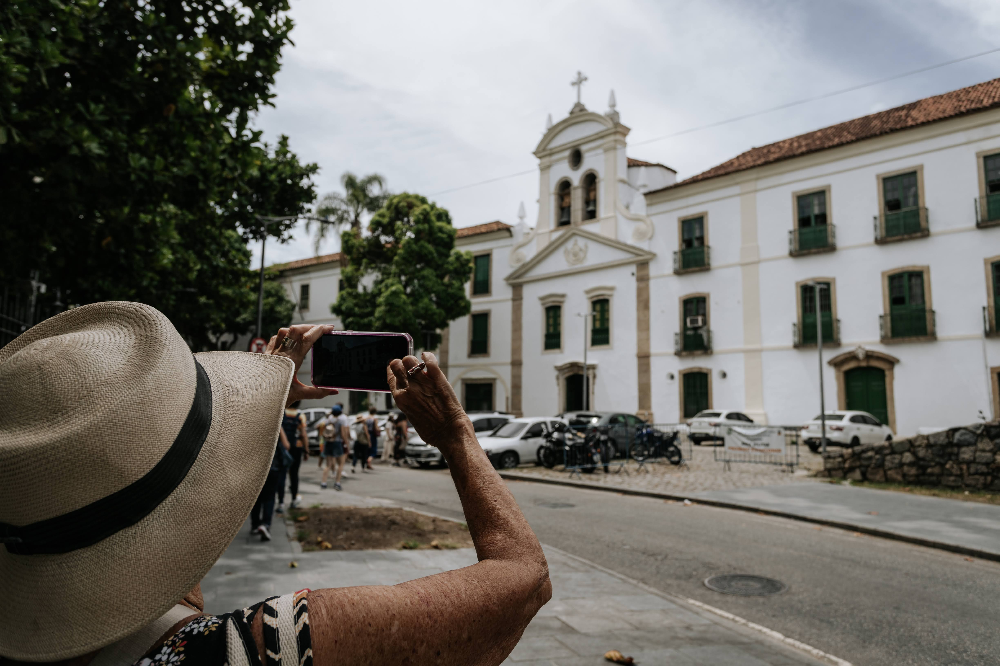
Rioclássica · Turismo e Cultura
Roteiros culturais para quem quer conhecer o Rio e para empresas, marcas e instituições que querem conectar pessoas à cidade.
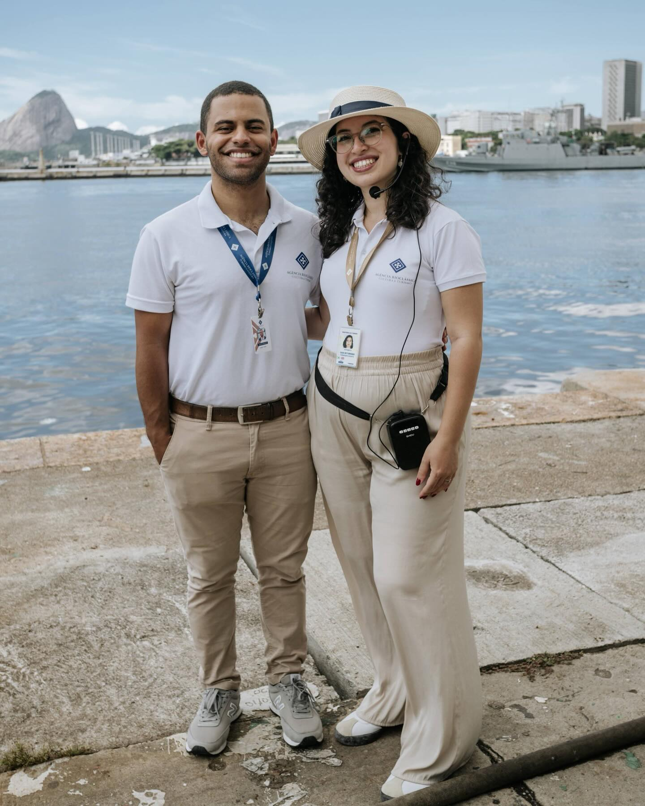
Conhecer o Rio Antigo é conhecer a própria história.
A Rioclássica é uma agência de turismo e cultura que cria experiências a partir da história, da literatura, da arquitetura, da arte e da memória do Rio de Janeiro. Com pesquisa e curadoria autoral, desenvolvemos roteiros que aproximam as pessoas da cidade e ampliam seu repertório cultural.
Atendemos quem deseja viver o Rio Antigo em um sábado aberto ou em um roteiro privativo, e também empresas, marcas e instituições que buscam experiências alinhadas ao público e aos objetivos de cada projeto.
Experiências de sábado e roteiros privativos para conhecer a cidade com profundidade e presença.
Press tours, programação cultural e ações sob medida: do encontro presencial à apresentação no palco.
Roteiros autorais que conectam história, literatura, arquitetura e memória aos lugares do Rio.
Roteiros abertos | Vagas limitadas para garantir profundidade
Experiências privativas | Customize sua jornada histórica
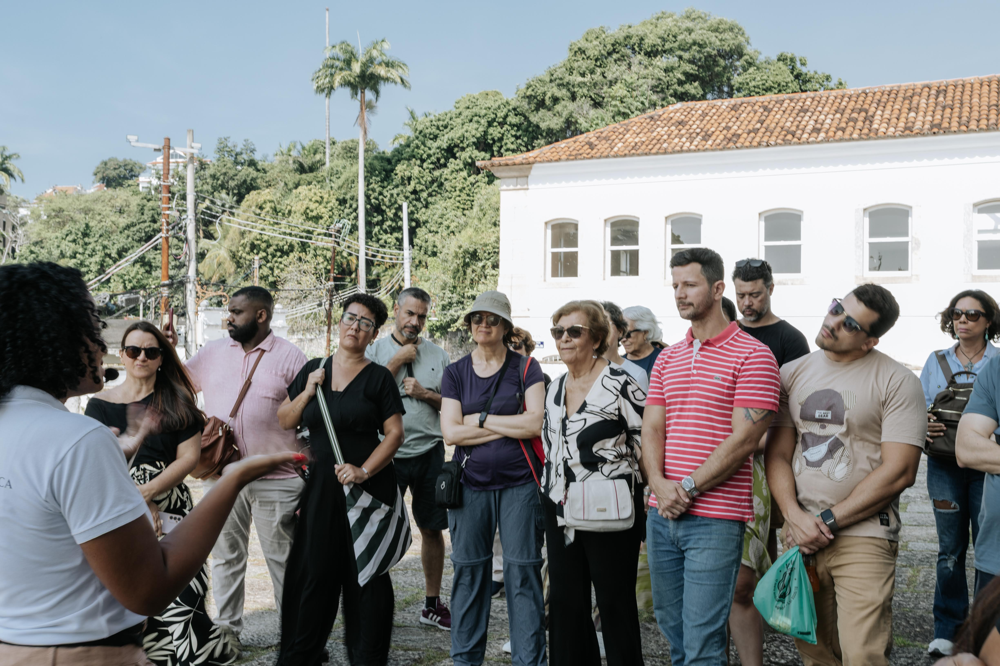
Patrimônio, memória e descoberta
Um percurso pelo Centro Histórico que aproxima os participantes dos lugares e das histórias que moldaram a cidade. Uma imersão no patrimônio carioca para conhecer o Rio Antigo e a própria história.
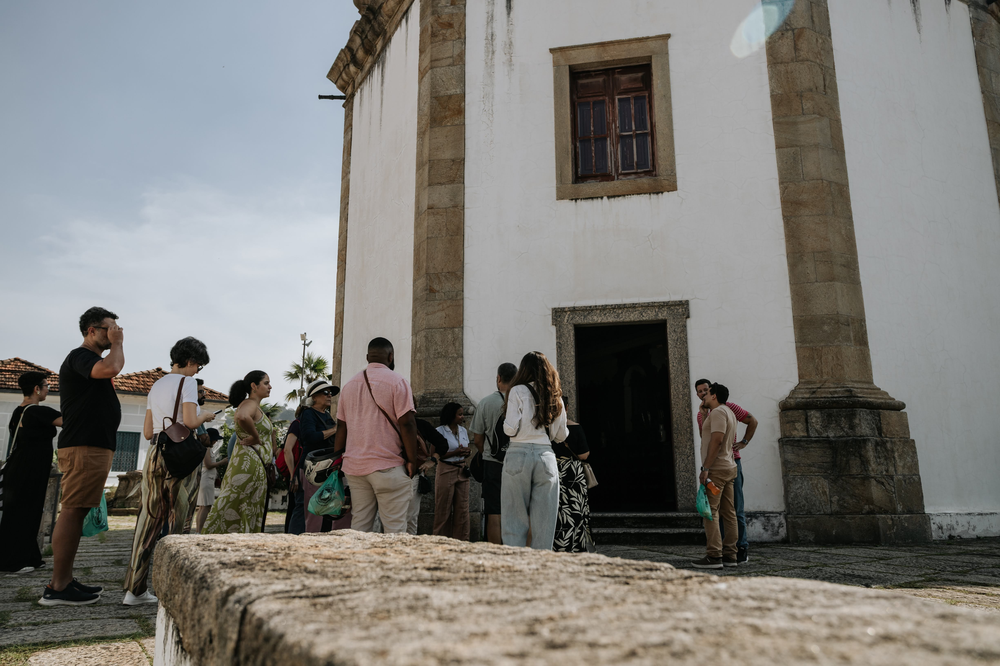
Fé, Arquitetura Barroca e Colonial
Caminhada através dos templos que definiram a paisagem espiritual do Rio. Inclui a Basílica da Candelária, Igreja de São Francisco da Penitência e suas gemas arquitetônicas escondidas.
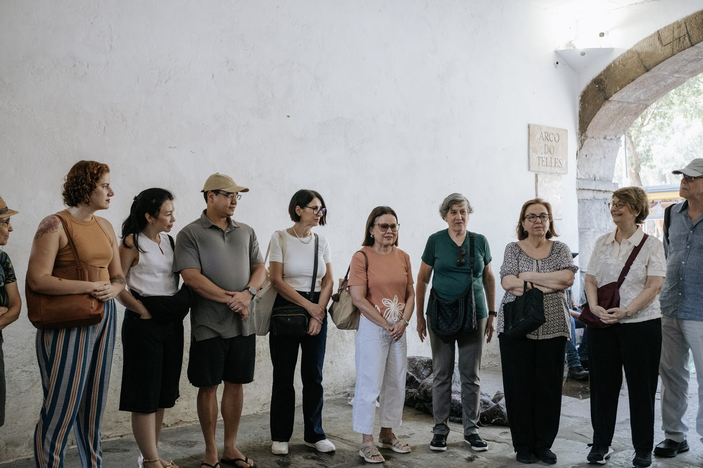
Uma Viagem no Tempo pela Corte
Praça XV, Paço Imperial e as intrigas políticas que moldaram a história. Compreenda os trâmites administrativos e as estratégias que construíram a identidade carioca.
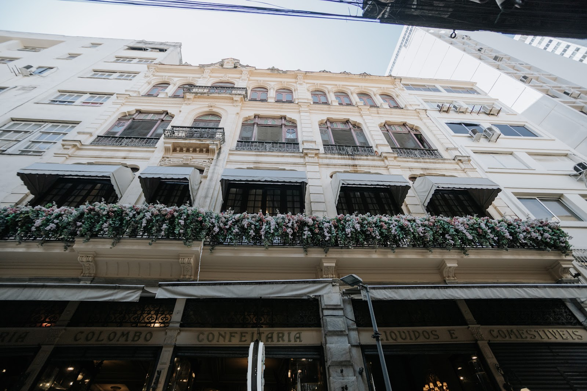
A Sofisticação da Belle Époque
Degustação e história através da Confeitaria Colombo, Casa Cavé, Manon e outras joias da tradição carioca. Uma experiência sensorial que conecta passado e presente.
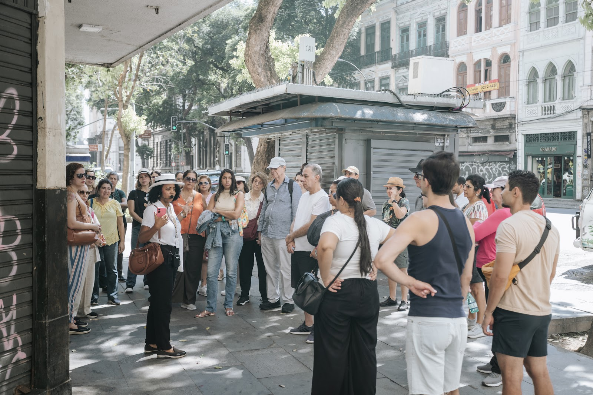
Machado de Assis e Contexto Histórico
Imersão nos contos clássicos como "A Cartomante" e "Missa do Galo". Uma fusão de leitura dramatizada, análise contextual e caminhada pelos espaços que inspiraram os textos.
Para quem quer viver a cidade e para organizações que querem oferecer essa experiência
Experiências de sábado e percursos sob medida para pessoas, famílias e pequenos grupos.
Roteiros culturais para ações de relacionamento, recepção de visitantes e encontros especiais.
Percursos que conectam a cidade ao universo de uma produção, campanha ou marca.
Caminhadas temáticas e tours virtuais que integram a programação de festivais e encontros corporativos.
Roteiros para escolas e instituições de ensino, aproximando os conteúdos da vivência na cidade.
Conversas sobre turismo cultural, economia criativa, empreendedorismo e criação de experiências.
Alguns caminhos que já trilhamos com marcas, instituições e escolas
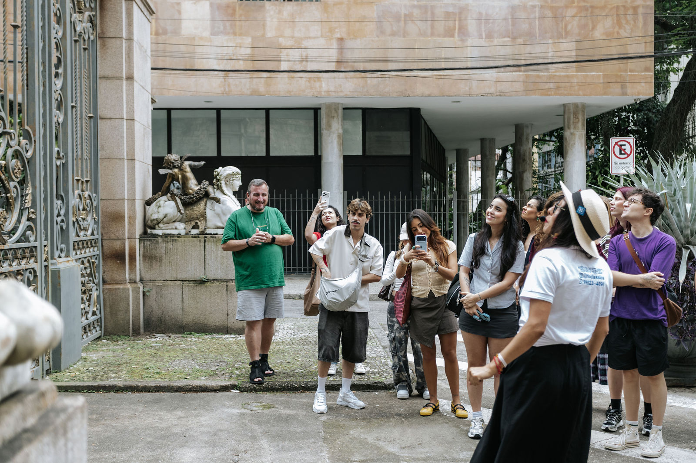
Disney+
A convite do Disney+, a Rioclássica realizou um press tour para jornalistas e influenciadores pelos cenários da série no Rio de Janeiro. O roteiro passou pelo Parque Guinle, Jardim Botânico e Edifício Touring, conectando os locais de gravação à história e à paisagem carioca.
A experiência contou com a participação do diretor René Sampaio, que compartilhou inspirações e bastidores da produção ao longo do percurso.
Ver fotos do tour Disney+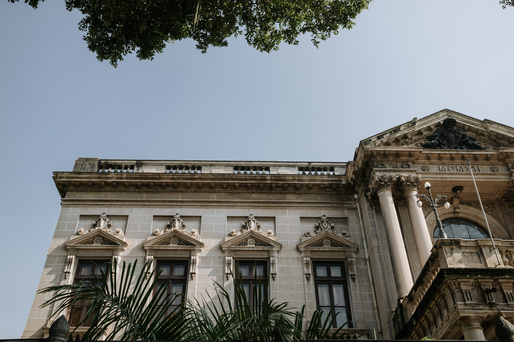
Patrimar
No palco do Teatro Riachuelo, a Rioclássica apresentou um tour virtual pelo Centro do Rio para mais de 1.000 corretores de imóveis, em um evento da Patrimar. O objetivo era ampliar o conhecimento dos profissionais sobre a região, oferecendo referências para apresentar seus atributos e contextualizar os imóveis em seu entorno.
Conduzida por Fernanda Duarte, a apresentação interativa combinou histórias dos lugares e informações organizadas em quatro pilares: Corporativo, Legislativo e Judiciário; Comércio, restaurantes e lojas; Cultura e lazer; Transporte: metrô, VLT e aeroporto.
Academia Brasileira de Letras
A Rioclássica integrou a programação de abertura do Festival Machado de Assis, projeto elaborado pela escritora Ana Maria Machado, imortal da ABL, em comemoração ao aniversário do autor. O festival aconteceu no Museu de Arte do Rio, o MAR.
Planejada para 100 pessoas, a caminhada literária teve como fio condutor o conto Noite de Almirante, escolhido por sua relação com a região portuária. A experiência conectou a narrativa à região da Praça Mauá, do Valongo, da Saúde e da Prainha.
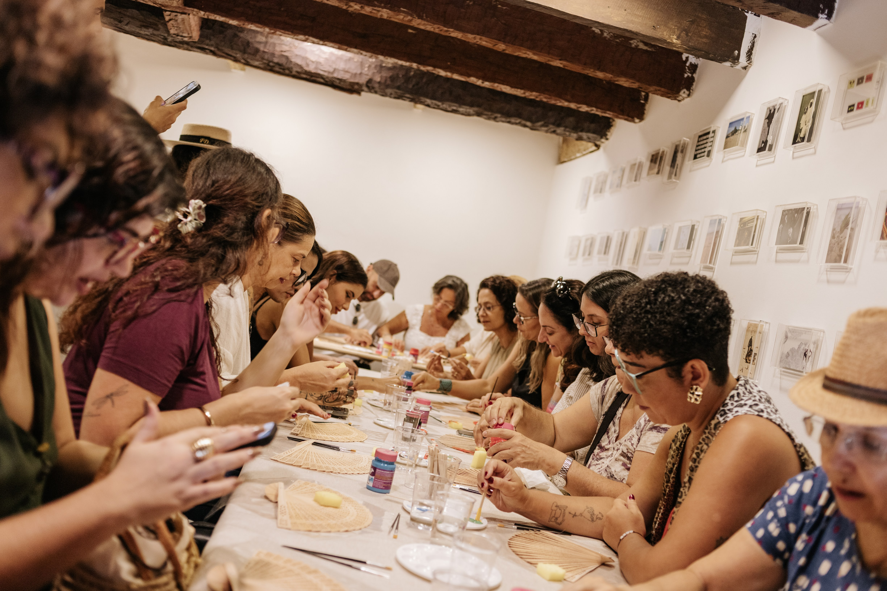
Escola Eleva Urca
Durante a Library Week, programação anual da Escola Eleva, a Rioclássica realizou o Encontro Literário com turmas do Ensino Médio da unidade Urca. A partir de contos de Machado de Assis, os estudantes foram convidados a descobrir conexões entre a literatura e a cidade.
Colégio Monte Alto
A Rioclássica realizou um tour pelo Rio Antigo com turmas do 3º, 4º e 5º anos do Colégio Monte Alto. Em contato com os lugares e o patrimônio da cidade, as crianças puderam conhecer histórias do Rio em uma experiência para além da sala de aula.
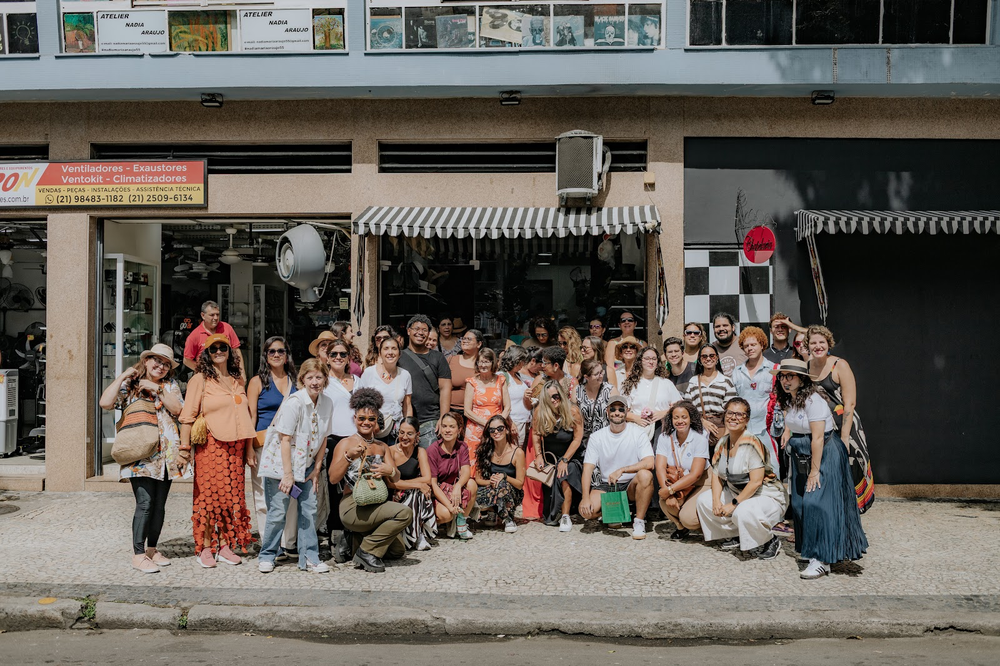
FGV
A convite da professora da disciplina de Economia Criativa da FGV, Fernanda Duarte apresentou a trajetória da Rioclássica como exemplo de empreendimento que transforma o patrimônio cultural carioca em experiências turísticas. A palestra abordou as ideias que deram origem aos roteiros, o processo de pesquisa e criação e a adesão do público às propostas.
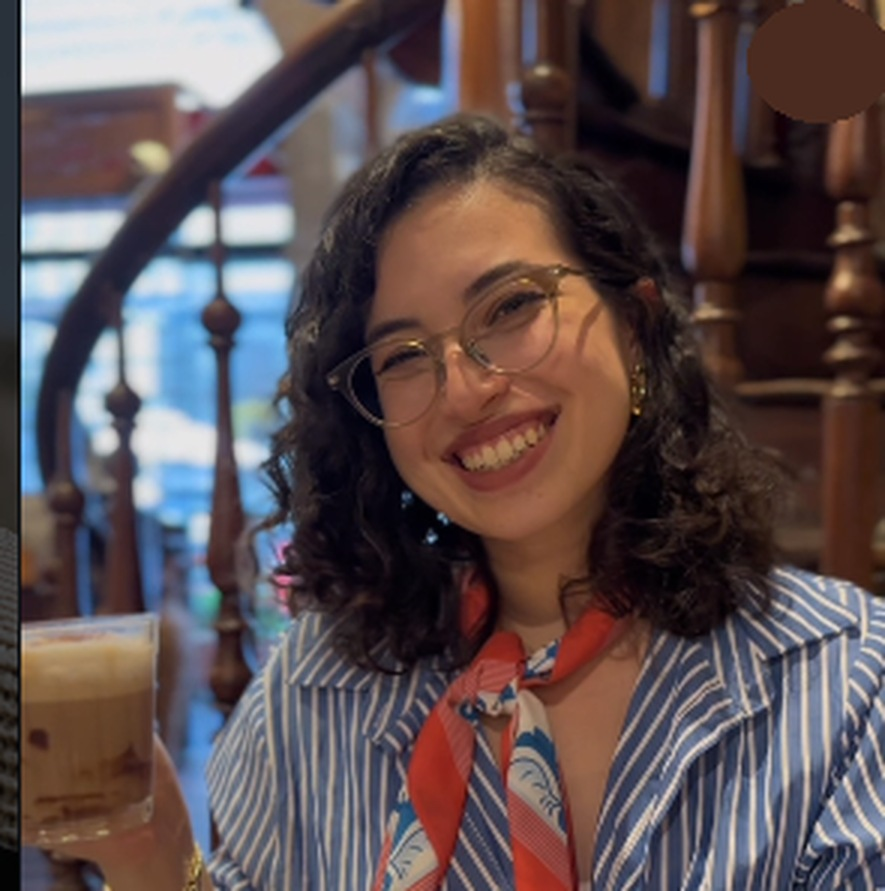
Fernanda Duarte
Fundadora e diretora
Empresária à frente da Rioclássica, guia de turismo e pesquisadora do Rio Antigo, Fernanda Duarte dedica seu trabalho a criar novas formas de conhecer e vivenciar a cidade.
Sua atuação reúne pesquisa histórica, literatura, patrimônio e criação de experiências, com atenção às histórias que dão sentido aos lugares. É colunista do Diário do Rio, onde assina “Aconteceu no Rio Antigo”, e leva sua experiência a palestras, encontros e projetos culturais.
Na Rioclássica, dirige a criação de roteiros e o desenvolvimento de propostas para diferentes públicos e instituições.
Cada experiência começa com uma boa conexão entre você (ou sua organização), o perfil do público e as histórias da cidade.
Conhecemos os objetivos, o público e o contexto da ação.
Selecionamos temas, lugares e narrativas para desenvolver a proposta.
Definimos o formato, a duração, o percurso e os recursos necessários.
Conduzimos a experiência com atenção ao conteúdo, à organização e aos participantes.
Literatura e Machado de Assis · História da moda · Igrejas históricas e música sacra · Confeitarias e gastronomia · Patrimônio e memória do Rio
Os temas e formatos podem ser combinados em propostas desenvolvidas para cada projeto.
Instituições e marcas que caminham conosco
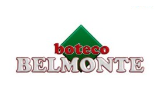
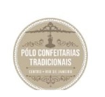
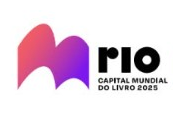
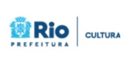
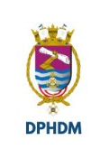
Registros dos nossos flâneurs desvendando a alma do Rio
Foto: Marcelle Nehme
Foto: Marcelle Nehme
Foto: Marcelle Nehme
Foto: Marcelle Nehme
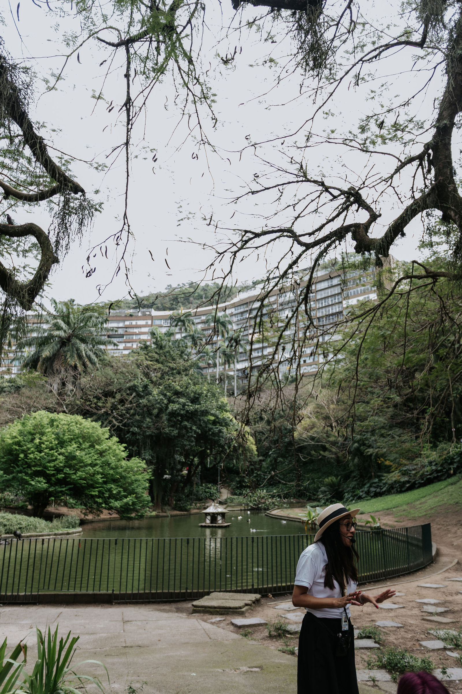
Foto: Marcelle Nehme
Foto: Marcelle Nehme
Foto: Marcelle Nehme
Foto: Marcelle Nehme
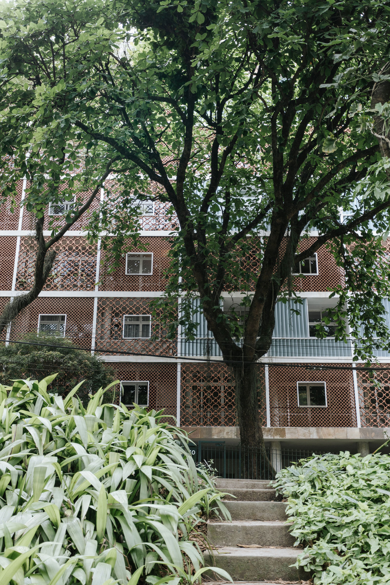
Foto: Marcelle Nehme
Foto: Marcelle Nehme
Foto: Marcelle Nehme
Foto: Marcelle Nehme
Foto: Marcelle Nehme
Foto: Marcelle Nehme
Ouça a playlist que acompanha a experiência Rioclássica
Pronto para se tornar um flâneur? Escolha um roteiro de sábado ou personalize sua imersão privativa.
Fernanda Duarte · Fundadora e diretora